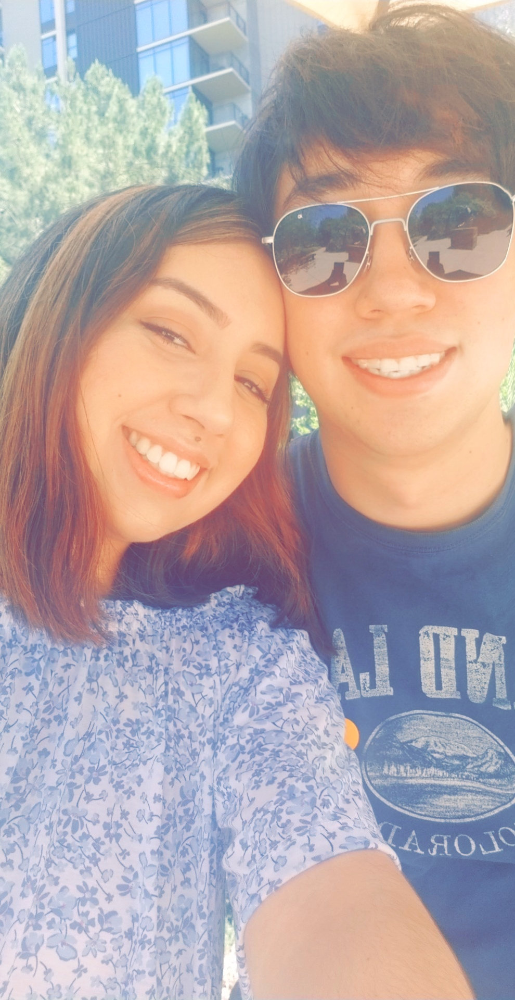

 I am brand new to coding in general. Before pursuing this career, I was a hard-woring dancer that had a passion unlike any other. I'm very socialable and I love to help others in need. I'm hoping that I can become just as passinonate towards coding as I am towards dance. So far, I'm very surprised by how interested I am in coding. It's very cool!
I recently moved here from Yuma, AZ and have dwelled in many job areas. From retail to machinery, I've decided that I want bigger and better things for my life. I'm excited to begin this course and find out if I have what it takes to become a full-stack web developer.